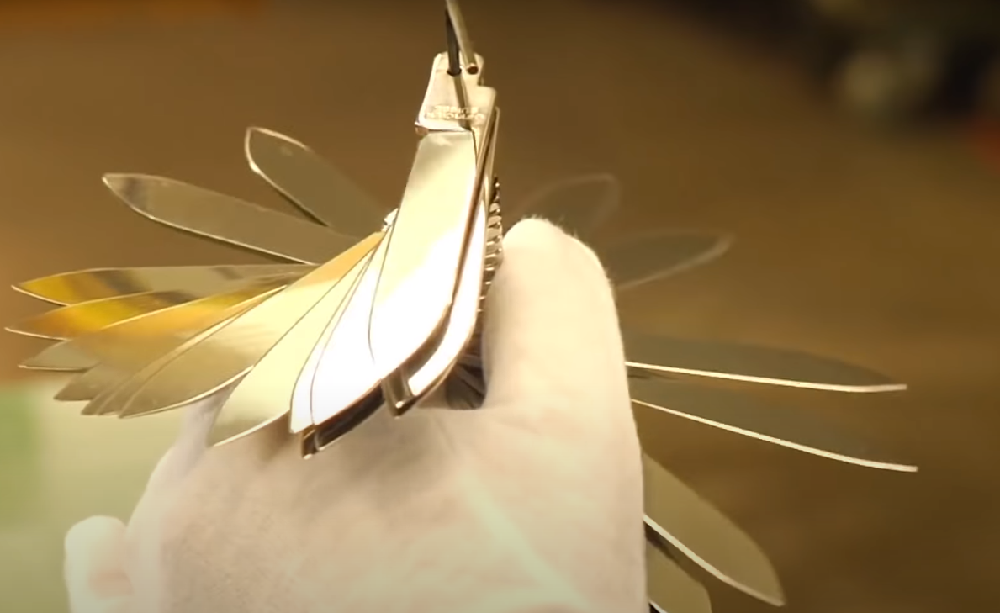

Historia:

Karl Elsener, um mestre cuteleiro suíço, fundou uma fábrica de canivetes em 1884 em Ibach Schwys, Alemanha, para desenvolver canivetes para o exército alemão. O primeiro canivete de Elsener para o exército em 1891 marcou o início do design industrial, tornando-se uma característica fundamental da sociedade capitalista no século XX.Em 1909, a empresa assume a designação de "Victoria", o nome da mãe de Elsener, e, a partir de 1921, adota o nome de marca "Victorinox"
Os canivetes Victorinox são conhecidos por sua multifuncionalidade e capacidade de combinar diversos instrumentos e ferramentas de forma prática e leve. O canivete original foi concebido para soldados e incluía uma escada, abre-latas, uma chave de fendas e uma agulha. A Elsener criou uma versão mais leve, que se tornou uma marca registrada e contribuiu para o sucesso comercial e a rápida internacionalização da empresa. Desde então, a empresa expandiu seus modelos de canivete para mais países, oferecendo uma ampla gama de combinações e diferentes modelos para atender às necessidades dos militares.
MOMA(Museu de Arte Moderna de Nova Iorque)exibem modelo canivete Victorinox "Champion".Veja no site, Clique aqui!
Produção:
Veja a seguir um video do canal NEPALMONTANHISMO,mostrando o processo de fabricação,até chegar ao consumidor final.

Onde encontrar:
Se você procura um artigo de luxo,que seja oficial da marca victorinox ,compre diretamente do site deles.Esse canivete possui a altura de 18mm ,comprimento 91mm e peso Líquido 113g.Material: ABS/Celidorposui e tem 14 funções,entre elas:

| 1 |
Abridor de garrafa |
7 |
Lâmina grande e pequena |
| 2 |
Argola |
8 |
Chave de fenda de 3mm e 6mm |
| 3 |
Saca-rolhas |
9 |
Desencapador de fio |
| 4 |
Gancho para várias utilidades |
10 |
Lâmina grande e pequena |
| 5 |
Tesoura |
11 |
Palito |
| 6 |
Perfurador |
12 |
Pinça |
mas caso queira algo mais custo benefício pode comprar em sites como mercado levre e shoppe,mas tera chance de não ser origial.
Curiosidades:
- Apesar de ser um país neutro, a Suíça tem exército. E o famoso canivete foi desenvolvido a pedido do exército, em 1891, e por isso tem o nome oficial de “Swiss Army Knife”.
- Atualmente, existem mais de 200 modelos diferentes de Canivete Suíço. Além das célebres lâminas, tesouras, saca-rolhas ou abridor de latas, outros itens envolvem desde lentes de aumento até bússolas ou pendrives.
- Os ataques terroristas de 11 de setembro de 2001 derrubaram as vendas de canivete suíço, uma vez que as empresas aéreas passaram a proibir a entrada de objetos cortantes nas aeronaves. É que o produto era muito vendido em Free Shops.
- Mesmo que você fabrique um canivete multiuso, não poderá usar o termo Canivete Suíço, que é patenteado pela empresa Victorinox.
- O design do Canivete Suíço o transformou em objeto de adoração, a ponto de fazer parte da exposição permanente de museus, como o Museu de Artes Aplicadas de Munique, Alemanha.